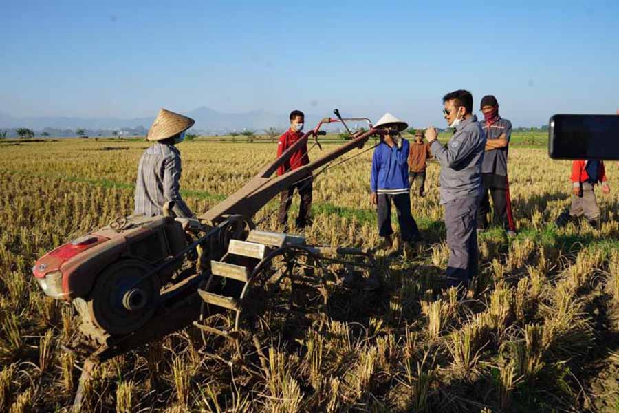

PASTIKAN BERAS AMAN, SYAHRUL: TIADA HARI TANPA PANEN
Menteri Pertanian Syahrul Yasin Limpo (Mentan SYL), menyampaikan, pada masa pandemi Covid-19 yang tengah berlangsung, proses penanaman dan panen padi terus dilakukan tanpa henti di sejumlah daerah sentra. Itu demi mengamankan kebutuhan beras dalam negeri yang menjadi pangan pokok utama.